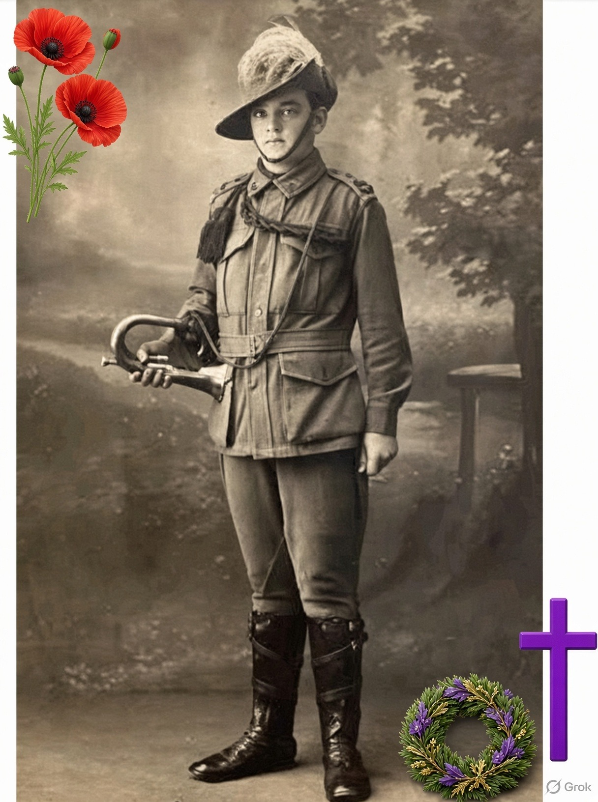
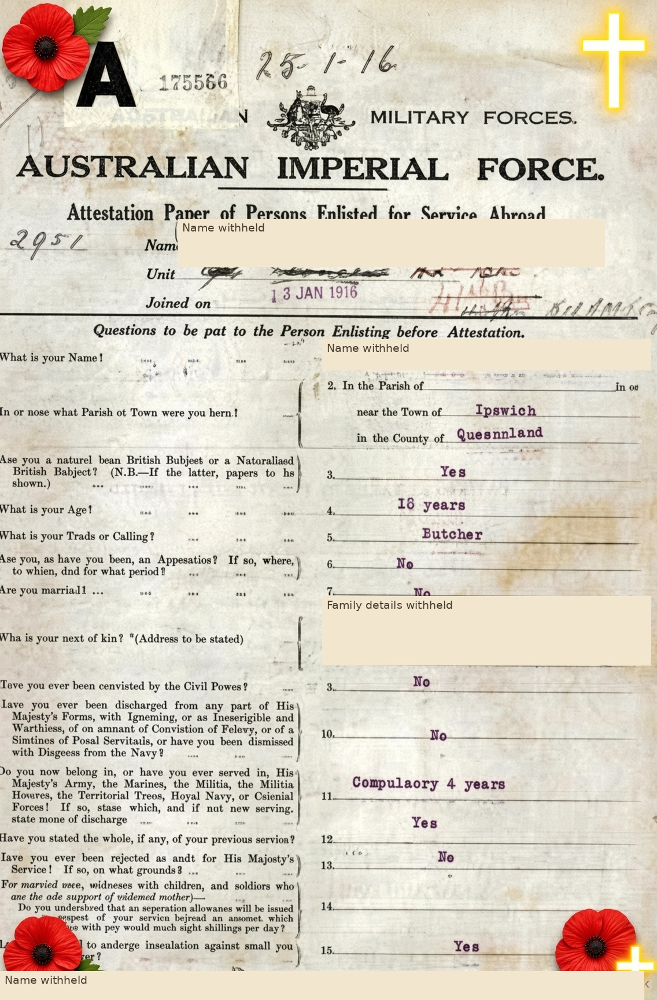
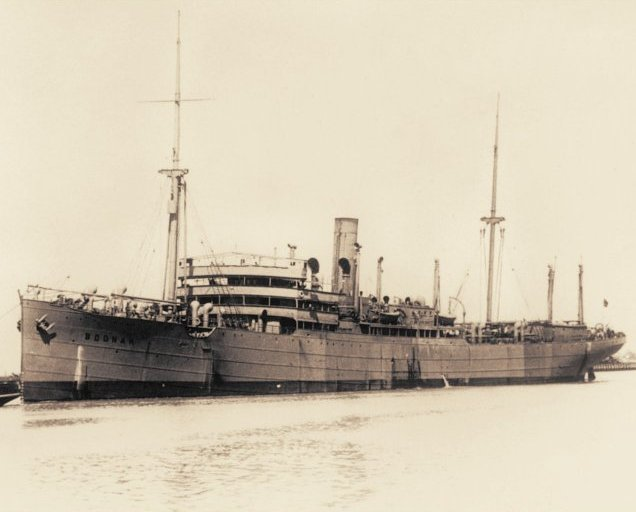
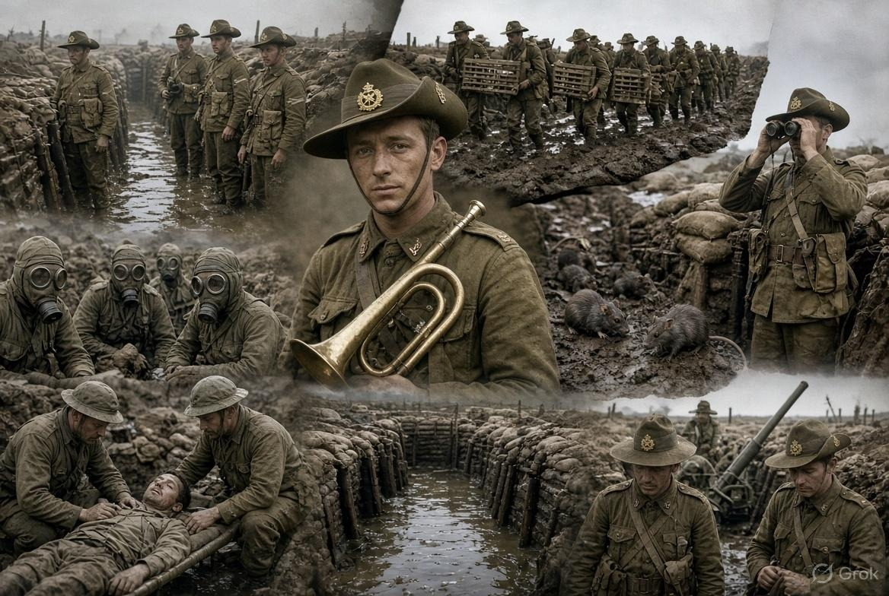
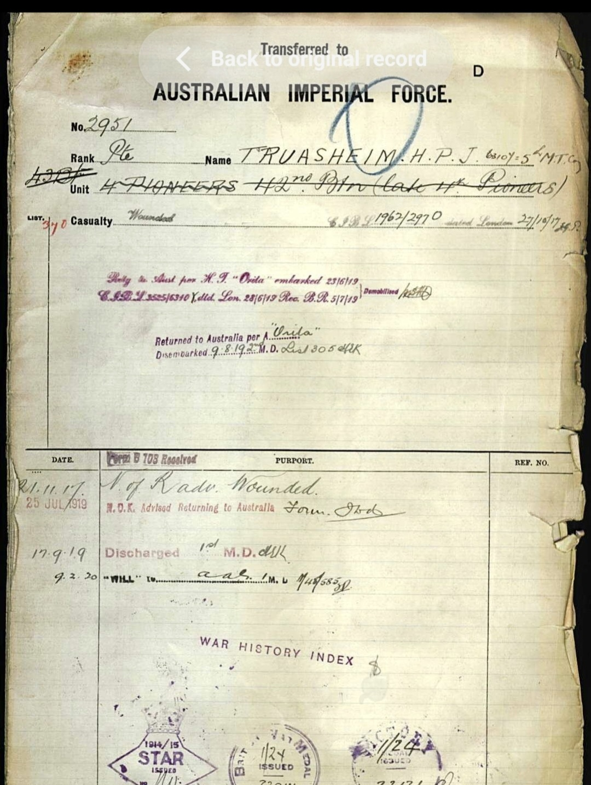
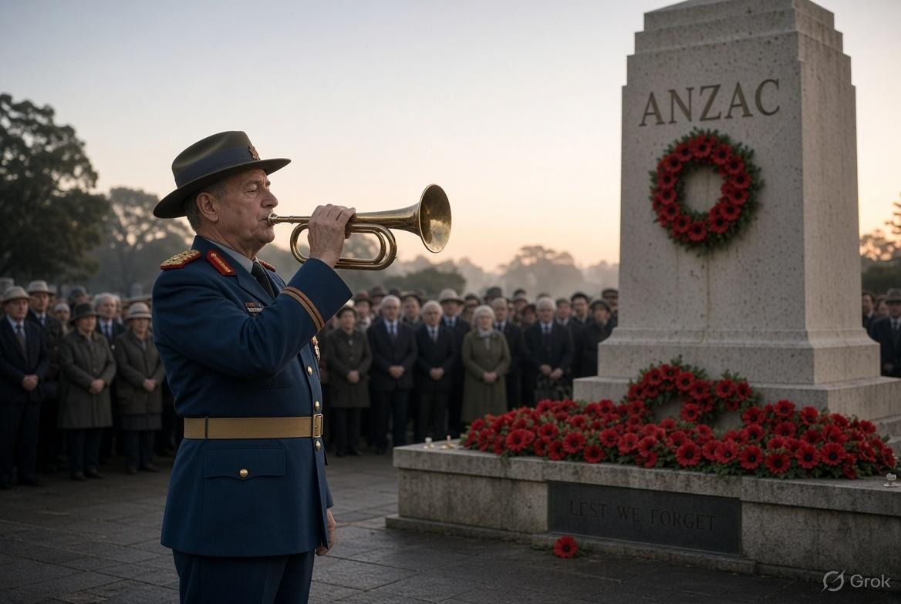

A bugle could call soldiers together. Years later, its clear note brought Harold’s grandchildren running in from the beach. This is his family’s story.
Some parts mention loss, war and being wounded. You can read with an adult, skip the trench details, or go straight to why we remember.
The Boy from Fernvale
Harold was just 18 in 1916 when he signed up for the war. He grew up in Fernvale, Queensland. By the time the war started, he already knew how to work hard.
Before the war, Harold worked as a butcher’s boy in Fernvale to help his family. His dad had died when Harold was only eight.

Working Hard
He wrapped meat, swept the floor, and learned to use a knife carefully. By the time he was fourteen, he had left school and was already earning his living.
Harold walked into a recruiting office in Brisbane and signed up. He had only just turned 18, and he was shorter than many of the other men. The officers looked at him and weren’t sure he would be strong enough for the usual soldier jobs, but they took him anyway.

The Clear Note
He sailed from Brisbane on the troopship HMAT Boonah. The men went first to Egypt, where the 4th Pioneer Battalion was being formed. They trained in the heat and dust.
The battalion needed someone to play the bugle. One day in camp an officer asked if anyone could play. Young Harold said he could. The officer handed him a bugle and told him to show what he could do.
Harold put it to his lips and blew one clear, steady note. Then he tried a few of the calls. The officer listened and nodded. Harold got the job. He became a bugler for his unit.

In the Trenches
Later the battalion went to France. In winter the trenches were deep with mud. Cold water filled the bottom and the men stood in it for hours. Sometimes snow fell and lay on the frozen mud. The wind was sharp and hands went numb.
Harold was a bugler for his unit. The 4th Pioneer Battalion helped build and repair trenches. These were long, narrow ditches used by soldiers for protection and movement. Working in and around them could still be dangerous.



Home Again
Harold was wounded in France. He was sent home. He kept the bugle.
Years later, at his beach house in Beachmere, Harold would still take out the bugle. He blew one clear note from the balcony so the grandchildren would come running in from the beach.

We Remember
Today, when someone hears a bugle on Anzac Day or Remembrance Day, someone in the family thinks of the boy from Fernvale.

11 November
Why we remember
Remembrance Day is a time to remember people who died or suffered in wars and armed conflicts. It is not a celebration of war.
At 11 am on 11 November 1918, an agreement called an armistice stopped fighting on the Western Front in Europe. This did not mean that every war everywhere had ended.
In Australia, people are encouraged to pause for one minute’s silence at 11 am on 11 November. We can remember those who served, think about families and civilians affected by war, and hope for peace.
Red poppies grew on damaged battlefields in northern France and Belgium. The red poppy became a symbol of remembrance.
Lest we forget.
You can sit quietly, draw, listen or talk with someone you trust. You do not need a family war story to take part.
Does your family have a way of remembering someone who served? You can think about Harold’s story instead if you prefer not to share a personal memory.
Listening is optional
Listen to the bugle
A bugler is someone who plays a bugle. The Last Post is a particular bugle call used at remembrance ceremonies.
These links open Australian War Memorial pages in a new tab. Listen with an adult, starting at a low volume. Nothing plays automatically on this page. The recordings are not of Harold.
Image credits and historical sources
This family recollection has not been independently checked against service records. Some artwork is AI-generated. Illustrations and edited record collages are not presented as independently authenticated photographs or original military records.
The family identifies the two record collages as Ancestry records. They include decorative additions and a Grok watermark; the underlying records have not been independently verified here.
Ship photograph: HMAT Boonah, about 1920 — Wikimedia Commons. Photographer not identified on the file page. The file is marked public domain under PD-Australia and PD-1996. This photograph shows the vessel, not a verified image of Harold’s voyage.

Creators and underlying rights for the other images have not been established; no public-domain status is claimed for them.
Historical context: Australian War Memorial: Origins of Remembrance Day; Flanders poppies; The Last Post.
Optional immersive tour: Trenches — National WWI Museum and Memorial, Google Arts & Culture. The museum describes narrated model-trench exploration with a VR option. It is not a tour of Harold’s personal service locations. Adult preview is recommended.
4th Pioneer Battalion and trenches: Australian War Memorial records show members moving up to the trenches at Le Verguier, digging a support trench at Hamel, and repairing communication trenches near Pozières. These establish the unit’s work, not Harold’s individual duties or where he sounded his bugle. Some linked service histories describe deaths and injuries; adults should preview them.